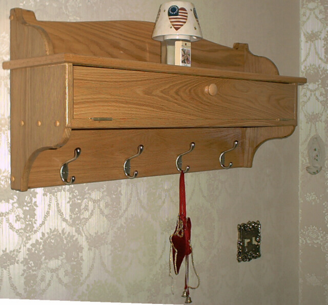
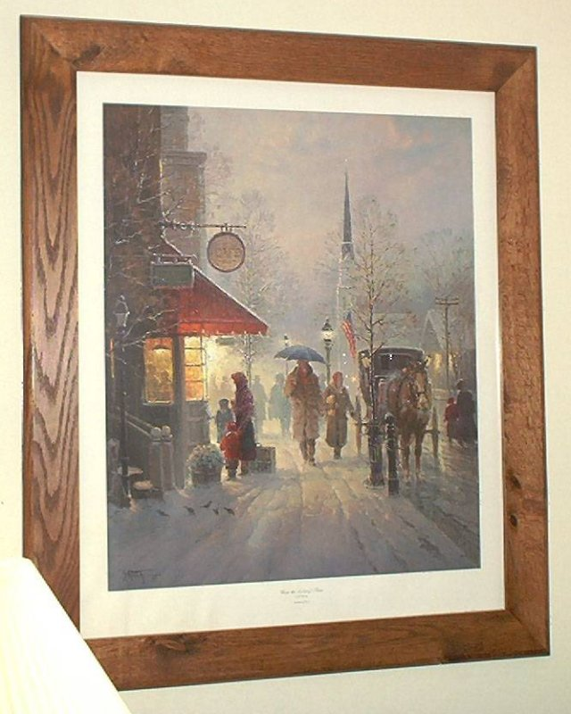
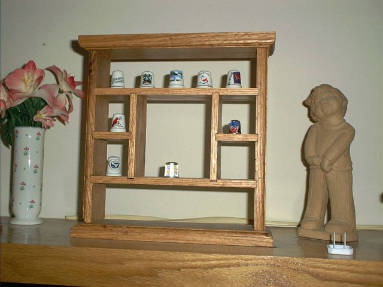
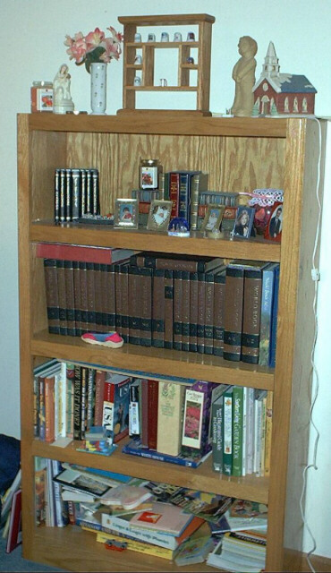
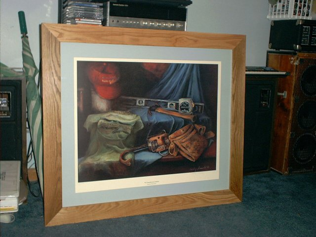
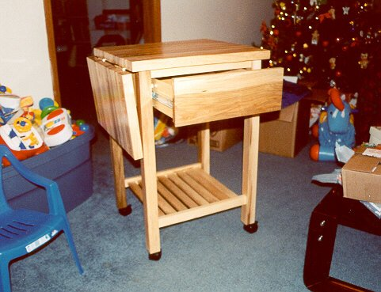
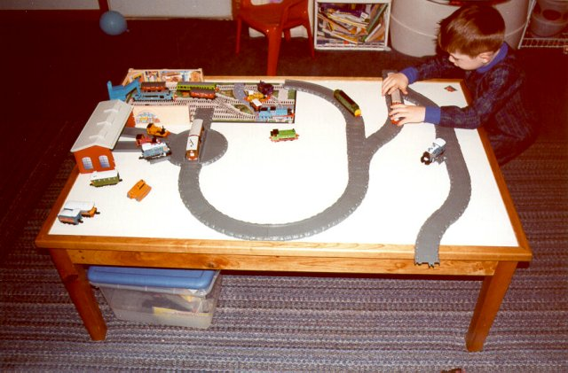
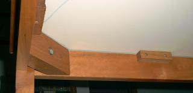
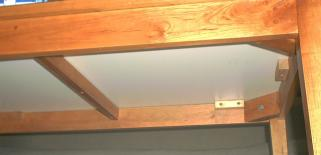

Steve's Woodworking
I like to work with wood. It helps that my dad has a sawmill in Western Pennsylvania (Karg Lumber Company), and has a knack for finding me unique pieces of wood. I work mostly with red and white oak, black cherry, and maple. I have a few pieces of yellow birch and poplar too. I also like having a repeatable process, and so have put together a list of steps to follow when making picture frames.
Having a design before you start is a good thing. There are Free Woodworking Plans & Projects and CAD Files for Woodworkers on the net.
Since I plane my own wood, I took an interest in planer snipe. I found a whitepaper on The Plane Truth about 12" Thickness Planer Snipe.
What good is a project plan if you can't find the right tools to build it or accessories to complete it? Rockler, Woodmall, or (a local favorite) Highland Woodworking carry a wide variety of tools and accesories. A specialty place for clocks and musical movements is Klockit. They even have analog movement atomic clocks! Imagine that! You can build a clock body out of wood, use the atomic clock movement, and now you never have to set the time again and it will always be right! You can find lots of other wood vendors listed at Wood Magazine.
We didn't have a closet in the foyer, and we needed something to hang our coats on during the cold months. I saw this country coat rack plan in a Woodsmith book, and over the course of about 8 months, I finished this country coat rack. It uses a bevel piece for anchoring to the wall. The plans called for wooden pegs, but I prefer the polished metal look for the hat and coat pegs.

I picked up a "dubby" cutoff jig at a local wood show so that I could make picture frames with ease. It still takes time and patience, but at least I can cut the 45 degree angles accurately. I like to make large picture frames because they are easier and it saves me money. Here is an oak frame that I stained with red oak stain. I use acrylic instead of glass in large frames because of the weight difference, and it's less expensive.

I wanted to make a Christmas present for my wife, and a neighbor suggested making a thimble shelf. She had a photo from a magazine, and so I drew up some plans based on the photo. This is one of those projects that shouldn't be cut out in advance - you almost have to custom cut each piece based on the exact width of the wood. If you look closely, you can see the gaps - since I cut most of it out in advance. It is supposed to have 4" x 4" needlepoint art in the middle. I made it from oak, and finished it with Tung Oil and carnuba wax. That is my favorite finish because it is easy, natural looking, and pretty.

Thimble Shelf
This shelf was my first fine furniture piece. I worked on the shelf using tools at my friend Kevin's shop. I didn't have clamps, a table saw, planer, or router at the time. By the time I finished it, I was working in my shop, and I had clamps, a table saw, a planer, and router.
I came up with the design for this shelf based on some shelves I had seen. The sides, top, bottom, and shelves are made from joined (biscuit) boards. The back is made from a piece of 1/4" oak plywood. The face frame is biscuit joined also. Did I mention I got a biscuit joiner too? The shelves are adjustable. It is finished with high gloss polyurethane.

Oak Book Shelf
Occasionally I get asked by my church or scout troop to make a picture frame for them. This picture was consigned to be built for my church. It is a lithograph of a painting of Jimmy Carter's Tools. They wanted the frame to be plain, and made from something like oak. So I made my standard 3" wide from from 3/4" oak, with a 3/8" rabbet along the inside to handle the backing and the glass. Actually, I didn't use glass, I used acrylic. I have a list of steps that I follow when I make frames. I use 3" boards because I also biscuit join the joints, and 3" boards work well for the 2" biscuits.

Oak Picture Frame
Another Christmas was coming, and I wanted to make something out of wood for my wife. She had mentioned wanting a butcher block. So I scoured my woodworking magazines and free plans that I had downloaded from the Wood Online Newsletter ( Wood Magazine), and found this plan that looked easier than the others that I had. It also looked small enough to fit in our kitchen. My dad had given me a load of maple which had dried nicely.
I made the top in three sections, just like the plan suggested. Then I tried to plane them with my planer. Bad idea for hard maple. It chipped. I have been told since that I should have wet the surface prior to planing, and that would have eliminated the chipping. I also had a buddy who has a sanding planer, but the damage (although minor) was done. I filled it in with chips, sawdust, and glue.
I had to purchase a drill-press mounted mortise machine (Delta) which worked very well for the joints. I had a hard time finding the table top clips, but eventually found them at Highland Hardware. All in all, a fun project to build, and it looks good too. I finished the piece with some Salad Bowl finish that I found at Highland Hardware.

Maple Butcher Block
This playtable was a Christmas present for my son. He loves trains, and wanted a Thomas the Tank Engine table to lay out the wooden track. The store-bought table would have cost around $200, and it was not built very solid. I sketched out a simple and solid design, and built this table over the course of a couple weeks.
The hardest part was the edging for the melamine. It is tongue and grooved. I routed a tongue in the melamine using an edging jig on my router - first routing the topside and then routing the bottom side using a 3/4" straight bit. I cut the groove in the cherry edging using my table saw (I only have a wobble dado head, and I hate to change blades, so I normally cut dado cuts using multiple passes with my standard Woodworker II 10" blade). I finished the piece with a couple of coats of satin polyurethane.
The Thomas the Tank Engine material lists with dimensions in inches:

Cherry Play Table with a Melamine Top
 
Underside of the Cherry Play Table showing attachment detail.
Here was another consigned piece for church. The picture frame is made from 2" cherry, and uses splines instead of my usual biscuit joints. I also routed the edges with a roundover bit. In the process, some of the wood chipped out. What can you do when the piece is complete? I glued in the chipped piece, and added sawdust and glue to cover up the crack, and then routed over it again when it was dry. It turned out very nice and is hardly noticeable (unless you know where to look).
Some of the original routing on the cherry left burn marks, and I tried to sand them out. A few burn marks remained after sanding, so I stained it a dark cherry color. After staining, I finished it with satin polyurethane.
Cherry Picture Frame
Page created by Steve Karg
Photos Copyright (c) 1998-2002 by The Karg Family